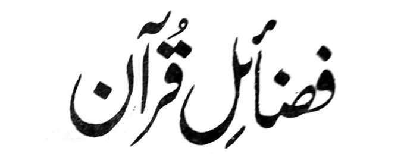

Manga Kalbihan o Qur’an
(Paganay a Kinitogalinen)
Pho-on ko Kisosorat Iyan sa Basa Urdu ko

FADHA-ILE QUR’AN
A Inisorat o
Shaikhul Hadith
Maulana Muhammad Zakariyya Kandhlawi
(Rahmatullahi ‘Alaihi)
MASJID ABU BAKR AS-SIDDIQ
Basak Malet-let, Marawi City
PHILIPPINES, 2000
PAMKASAN